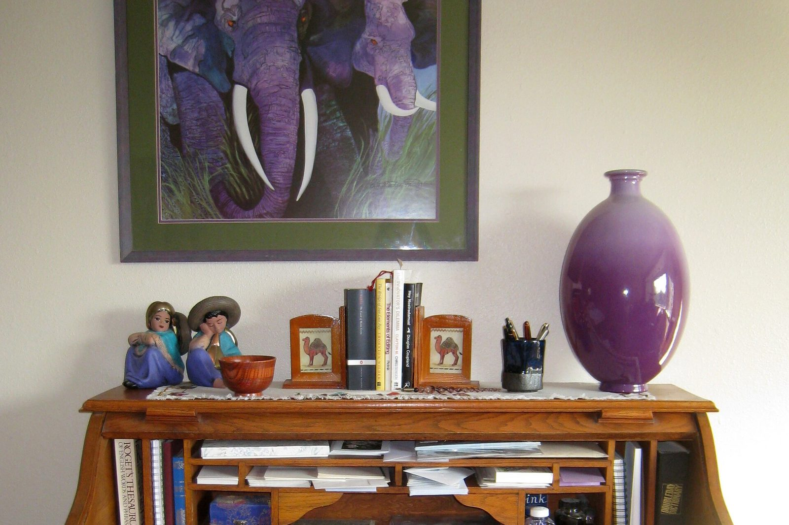

Méthodologie · Préparer aux examens en français
Les ressources de français réunies par examen : brevet (DNB), CAP, bac professionnel, bac de français à l’écrit et à l’oral.
Voir le support
Collection
Outils transversaux : méthode, progression annuelle, évaluation, GEREX, à tous les niveaux.
Supports recensés : 0
Les ressources de français réunies par examen : brevet (DNB), CAP, bac professionnel, bac de français à l’écrit et à l’oral.
Voir le supportLes examens d’anglais réunis : brevet (DNB), CAP et CAPA, bac professionnel, lycée général et technologique (LVA, LVB, LLCER, AMC, Grand Oral), avec la spirale de Gorse.
Voir le supportHuit séances pour construire une réponse personnelle : ancrer, éprouver, déplacer. Dissertation pour la voie générale, contraction et essai pour la voie technologique, avec la spirale de Gorse.
Voir le supportPrésentation de GEREX pour retrouver des outils utiles en classe.
Voir le supportAnnonce FacebookExercices de ponctuation en anglais.
Voir le supportAnnonce FacebookMéthodologie de l'écrit : construire un essai en anglais.
Voir le supportAnnonce FacebookMéthodes pour résumer un texte et construire une argumentation.
Voir le supportAnnonce FacebookPistes pour aider les élèves à apprendre efficacement.
Voir le supportAnnonce FacebookDonner le goût de l'étude et de la curiosité intellectuelle.
Voir le supportAnnonce FacebookOrganiser et animer des cours à distance en français et en anglais.
Voir le supportAnnonce FacebookÉvaluation au service des progrès des élèves.
Voir le supportAnnonce FacebookAtelier pour élargir le vocabulaire en anglais.
Voir le supportAnnonce FacebookFiches GEREX pour le français et l'anglais, du CAP au Bac général et technologique.
Voir le supportAnnonce FacebookEspace de soutien s'appuyant sur les outils GEREX.
Voir le supportAnnonce FacebookPrise de notes pour le post-bac (BTS, IUT, université).
Voir le supportAnnonce FacebookRepères pour une pédagogie orientée vers la réussite.
Voir le supportAnnonce FacebookProgression annuelle en français et en anglais, de la Seconde à la Terminale.
Voir le supportAnnonce FacebookRessources en préparation.
Neuf séances pour la lecture à voix haute, l’explication, la présentation d’une œuvre et l’entretien. Une partie complémentaire pour le chef-d’œuvre au CAP et le projet au baccalauréat professionnel. La Boétie et Sarraute, oraux modèles en dialogue, avec la spirale de Gorse.
Voir le supportUn code couleur pour participer sans s'exposer : trois ardoises sur pique, un classeur noté, et une sortie de cours prévue avec la vie scolaire.
Voir le supportApproche du théâtre : lire, dire et jouer les textes.
Voir le supportAnnonce Facebook